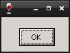

Steward
分享是一種喜悅、更是一種幸福
程式語言 - Wine - C/C++ - Resource - VersionInfo
參考資訊：
http://www.winprog.org/tutorial/
http://winapi.freetechsecrets.com/win32/
https://github.com/gammasoft71/Examples_Win32
http://masm32.com/board/index.php?topic=3584.0
https://learn.microsoft.com/en-us/windows/win32/winmsg/window-styles
Windows PE執行檔案可以內嵌Version資訊，在Windows系統下，只要在檔案上方按下滑鼠右鍵，選擇內容即可查看，而這個Version內容就是透過Resource編譯連結
main.c
#include <stdio.h>
#include <string.h>
#include <windows.h>
#include <commctrl.h>
int WINAPI WinMain(HINSTANCE hInstance, HINSTANCE hPrevInstance, LPSTR lpCmdLine, int nCmdShow)
{
char exeName[255] = {0};
GetModuleFileName(NULL, exeName, sizeof(exeName));
DWORD vHandle = 0;
DWORD vSize = GetFileVersionInfoSize(exeName, &vHandle);
char *vData = malloc(vSize);
GetFileVersionInfo(exeName, vHandle, vSize, vData);
DWORD vLen = 0;
char *vName = NULL;
VerQueryValue(vData, "\\StringFileInfo\\000004b0\\CompanyName", (LPVOID*)&vName, &vLen);
MessageBox(NULL, vName, "main", MB_OK);
free(vData);
ExitProcess(0);
return 0;
}
main.rc
#include <windows.h>
LANGUAGE LANG_NEUTRAL, SUBLANG_NEUTRAL
#pragma code_page(65001)
VS_VERSION_INFO VERSIONINFO
FILEVERSION 0x1000
PRODUCTVERSION 0x1000
FILEFLAGSMASK 0x0000
FILEOS VOS_NT
FILETYPE VFT_APP
FILESUBTYPE VFT2_UNKNOWN
BEGIN
BLOCK "StringFileInfo"
BEGIN
BLOCK "000004b0"
BEGIN
VALUE "CompanyName", "test"
VALUE "FileDescription", "test"
VALUE "FileVersion", "1.0.0"
VALUE "InternalName", "test"
VALUE "LegalCopyright", "test"
VALUE "LegalTrademarks1", "test"
VALUE "LegalTrademarks2", "test"
VALUE "OriginalFilename", "test"
VALUE "ProductName", "test"
VALUE "ProductVersion", "1.0.0"
END
END
BLOCK "VarFileInfo"
BEGIN
VALUE "Translation", 0x000, 1200
END
END
編譯、執行
$ x86_64-w64-mingw32-windres main.rc -o main.res $ winegcc main.c main.res -lversion -o main $ wine ./main.exe
